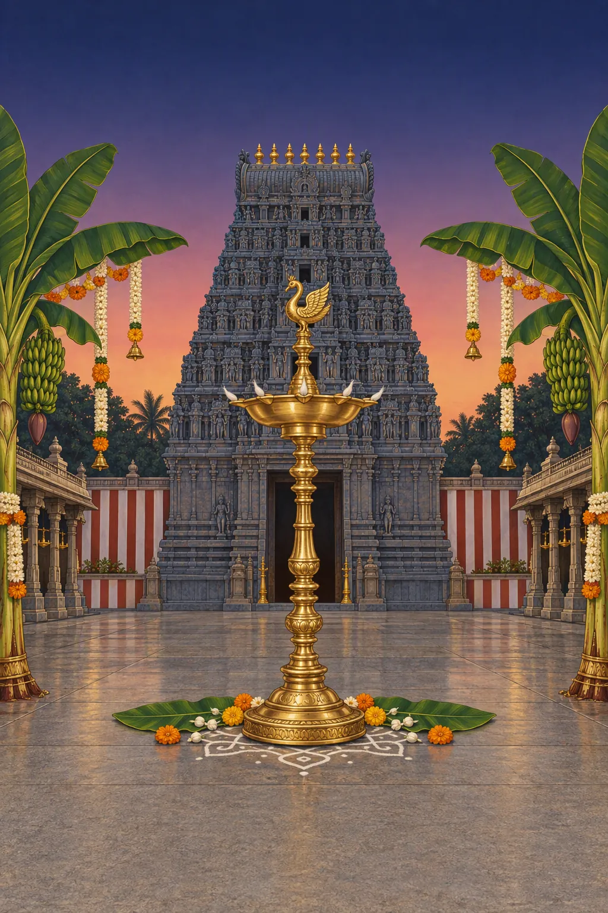
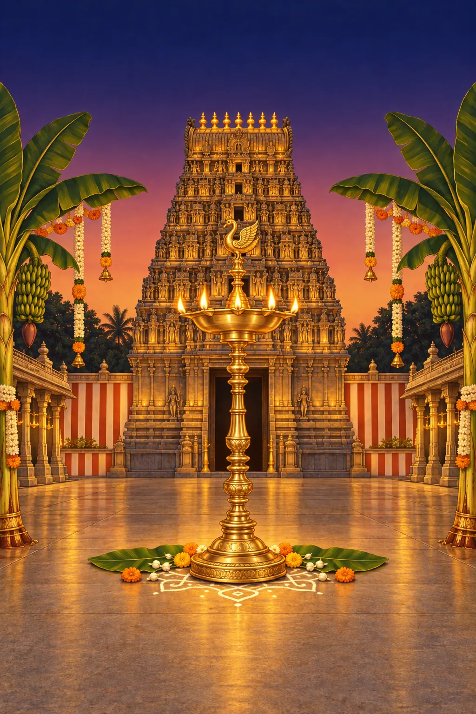
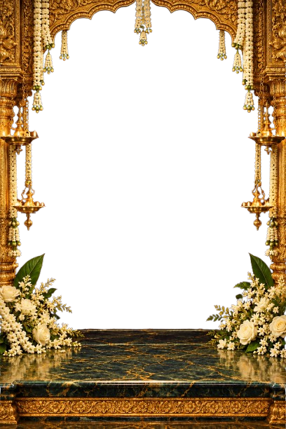
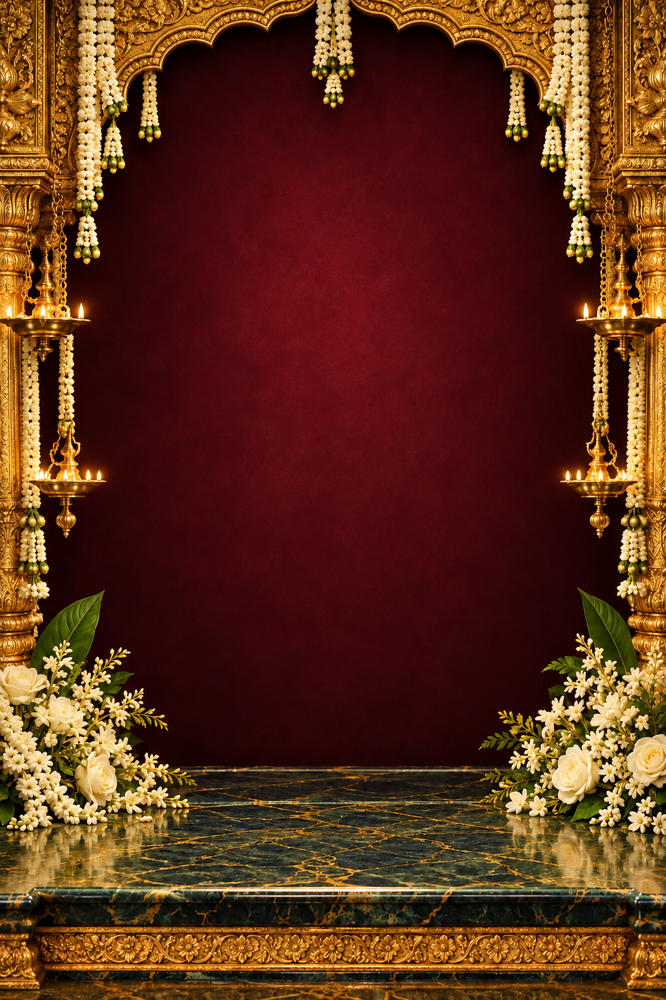

செம்புலப் பெயல்நீர் போல,
அன்புடை நெஞ்சம் தாம் கலந்தனவே!
வீணையடி நீ எனக்கு, மேவும் விரல் நானுனக்கு;
பூணும் வடம் நீ எனக்கு, புது வைரம் நானுனக்கு;
காணுமிடந்தோறும் நின்றன் கண்ணின் ஒளி வீசுதடி!
மாணுடைய பேரரசே! வாழ்வு நிலையே! கண்ணம்மா!
அன்பும் அறனும் உடைத்தாயின்
இல்வாழ்க்கை
பண்பும் பயனும் அது.
திருமண நாளை நோக்கி
00DAYS
00HOURS
00MINUTES
00SECONDS
பெரியோர்களின் ஆசியையும்,
உறவுகளின் அன்பையும்,
நண்பர்களின்
வாழ்த்துகளையும்
நாடி நிற்கும் இந்நன்னாளில்,
தங்கள் வருகையை அன்புடன் எதிர்நோக்குகிறோம்!
தினேஷ்குமார் & சுதேசி
குத்துவிளக்கைத் தொடவும்